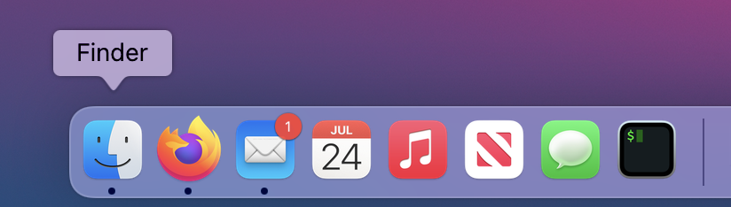
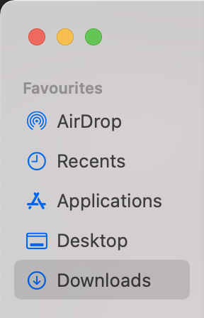
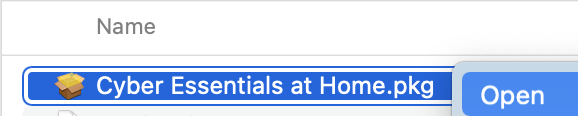
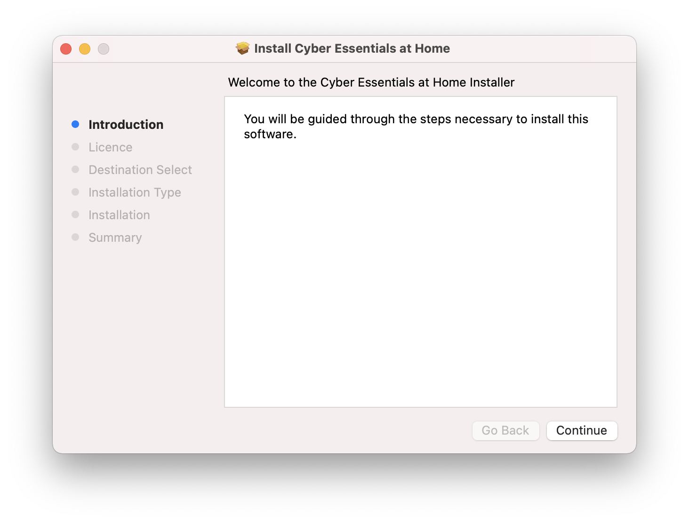
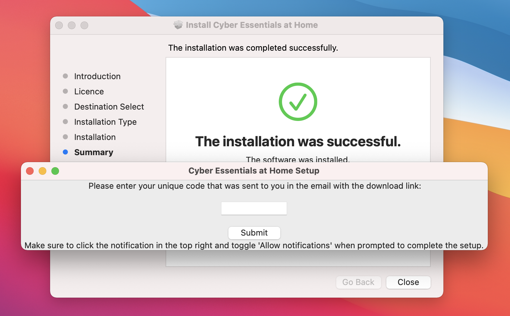
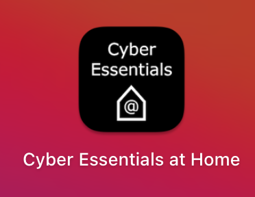
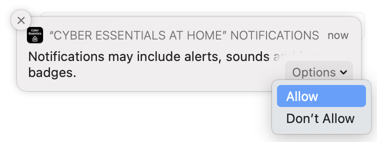

To install the tool on macOS, please follow the 7 simple instructions below:
DOWNLOAD FOR macOS





This box should show up once the installation completes, but if it doesn't, relaunch the app from your Applications

The option to enable notifications will appear in the top right. Click "Options" and then "Allow".
